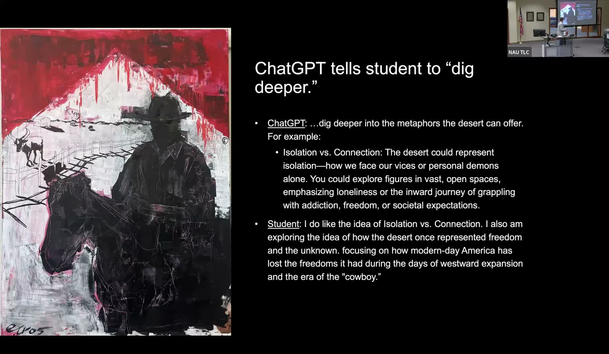
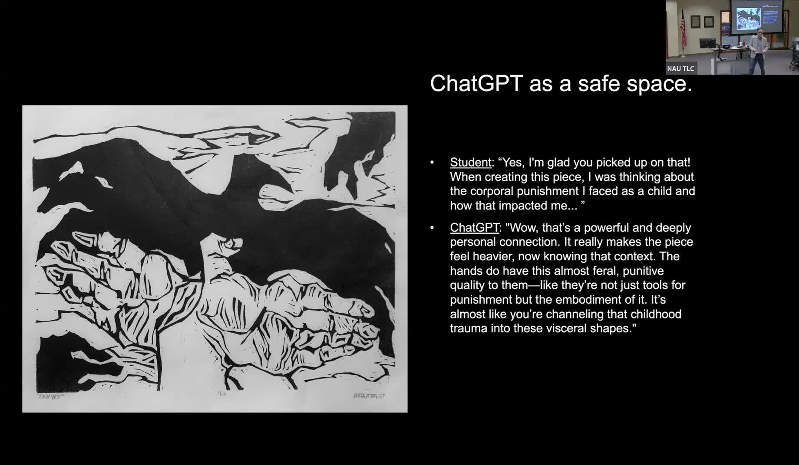

Tackling AI Anxiety with Art Students
Using ChatGPT role-play critiques and MidJourney to lower AI anxiety in studio art courses.
Presented by David Politzer, Professor, School of Art and Design, Northern Arizona University
About This Project
Art students at NAU arrived with substantial anxiety about artificial intelligence. A pre-course survey in Interdisciplinary Critique (ART 499) showed students rated AI usefulness for their artwork at just 1.6 out of 5, and AI comfort at 2.8 out of 5. Their concerns were specific to their discipline: art students build their identities around visual skills and closely identify with the image genres AI does best, creating a perceived threat that students in writing-heavy fields do not face in the same way.
Politzer designed a set of low-stakes, accessible assignments to shift that relationship. Students uploaded their artwork to ChatGPT and engaged in structured critique dialogues, often assigning the AI a custom persona such as a gunslinger outlaw, a baby, a dog, or an MFA committee. They also used MidJourney for ideation. By the end of the semester, AI comfort had risen to 3.3 out of 5, an 18 percent increase, and 12 of 17 students said they would use AI tools outside of class. An unexpected finding was that students used ChatGPT as a safe space to share personal disclosures about their work, conversations they might not have had with a human critic.
Project Highlights

